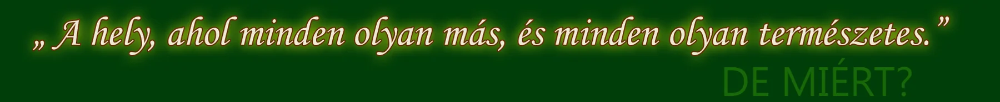
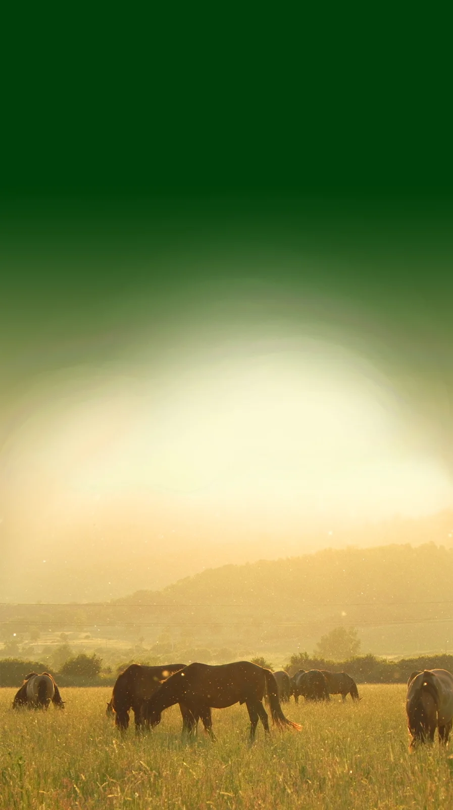

A közhiedelemmel ellentétben, nem vagyunk „lovarda” és nem vagyunk „üzleti vállalkozás”.
Közhasznú kulturális és sportegyesületként működünk.
A tagság önállóan biztosítja és tartja fenn a működés feltételeit.Mit tanulhat és gyakorolhat egyesületünknél?
Elsősorban lovaglást és íjászatot, a ló -használat, -kiképzés, -tartás és a lovas életmód alapjait,
valamint egyéb fegyveres és pusztakezes technikákat, lovasíjászatot, a lovasharc alapjait, …
Az egyesület képzési anyagának és módszereinek alapját az egyesület által,
Kelemen Zsolt szakmai irányítása alatt végzett gyakorlati/kísérleti régészeti kutatómunka
képezi, melynek célja a hagyományos HUN-MAGYAR lovaskultúra és harcművészet megismerése,
gyakorlása és népszerűsítése.Ló és eszközállományunkat ennek megfelelően válogattuk.
Lovaink:
Nincsenek angol telivérből és egyéb idegen fajtákból tenyésztett modern „sportlovaink”.
Lóállományunk hagyományos, ősi jellegű vadlovakból, valamint ezek „ősi kultúrlovak” utódaival célkeresztezett keverék lovakból áll.
A ló és az ember kapcsolata, a lovaglás, majd a legelső és legjelentősebb HUN lovaskultúra ilyen lovakkal kezdődött és működött.
Marmagasságuk ennek megfelelő 130-145cm. A lovak természetes testmérete.
Mozgásukat ezért a gyors/szapora lépés, kis hátmozgás, gyors, dinamikus irányváltás jellemzi. Lovasaiknak ehhez a mozgáshoz kell tudniuk alkalmazkodni.
Természetes, hogy a ma ismert nyugat-európai sportlovas technikák és eszközök erre csaknem teljesen alkalmatlanok, ezért ilyesmikkel nem kísérletezünk.
Az alapítástól kezdve a 90’-es években Kelemen Zsolt által beazonosított, hagyományos, „katonai” lovaglóstílust alkalmazzuk és oktatjuk. A módszer lehetővé tette/teszi akár több ezer kilométeres távok leküzdését, nagy mennyiségű és tömegű felszerelés viseletét/szállítását, eszközök/fegyverek egyéni és csapatszintű alkalmazását, különböző akadályok leküzdését, összetett (harci/egyéb) feladatok megoldását. Kiváló erőlétet, fizikai és szellemi felkészültséget biztosít, valamint rendkívül biztonságos!
Amint kiváló képzettségű lovaink, akiket egész évben (váltott) legelőn tartunk, a szabadban, természetben dolgoztatunk. Emiatt teljesen higiénikusak, stabil idegrendszerűek.
Hátas munkalóként elsősorban herélteket és csődöröket alkalmazunk. Kancaállományunk legfőbb feladata, hogy minél több méncsikót hozzanak a világra és neveljenek fel. Természetesen ők is be vannak lovagolva és alapszinten munkaképesek.Íjaink:
eredendően hosszú húzáshosszra készített, testmérethez és erőnléthez párosított, HUN-MAGYAR típusú íjak. Használatukhoz a hozzájuk illő hagyományos (nemcsak annak gondolt, mondott!!!), rendkívül gyors, hatékony, mozgó célok leküzdésére, illetve mozgásból leadott lövésekre kiválóan alkalmas, lovas íjásztechnikát alkalmazzuk és oktatjuk.
Ezt alaposan bemutató szakirodalom (tankönyv) 2010-ben jelent meg az egyesület kiadásában „Hun-Magyar Harcművészet – Az íjászat hagyományos módszere” címmel.
Kisebb, gyengébb fizikumú, növésben levő gyerekek számára hozzájuk méretezett, egyszerűbb, könnyebben feszíthető szkíta-szerű típusok is rendelkezésre állnak.Javaslatunk az öltözet megválasztására:
Lovas gyakorló öltözet természetesen szabadon választható, de mindenképpen legyen az időjárás és terepviszonyoknak megfelelő. Megválasztásánál kerüljük a műszálas anyagokat! Nem javasoljuk a lovas szaküzletekben árusított lovas, sportöltözeteket! (Nyáron meleg, télen hideg!) Hosszú évek tapasztalatai alapján a (történelmi párhuzamokkal igazolt, természetes anyagú, kopásálló, szennyeződésre sem érzékeny) katonai gyakorlóöltözeteket, vagy ezeknél is bővebb nadrágok viseletét javasoljuk. Az ilyen nadrágok szabása a régi lovas kultúrákban alkalmazott ruhadarabokkal közel megegyezik! Nyáron szellős, nem melegít, télen alá lehet öltözni. A felsőruházatot érdemes úgy megválasztani, hogy az íjkezelést ne akadályozza!Lábbeli: legjobban és legolcsóbban hozzáférhető valamilyen „minden idős” (nem bélelt), bőr felsőrésszel készített katonai bakancs, vagy csizma. Egy számmal nagyobb, mint egyébként szükséges! Jól védi a lovas lábát a fizikai sérülésektől és a hidegtől, emellett könnyen tisztán tartható és átázás-mentessé tehető. Nyáron pedig, lazán fűzve jól szellőzik. Térdig érő vízbe, sárba persze elkerülhetetlen a gumicsizma. Célszerű ebből is legalább egy számmal nagyobbat hordani!
Szerencsés, ha a ruházaton van biztosan záródó (pl.: zipzáros), kellően nagy befogadóképességű zseb! Ajánlott továbbá – nem műszálas – sapka/kalap viselete is.
LOVASHARC.HU
{kind=link}
